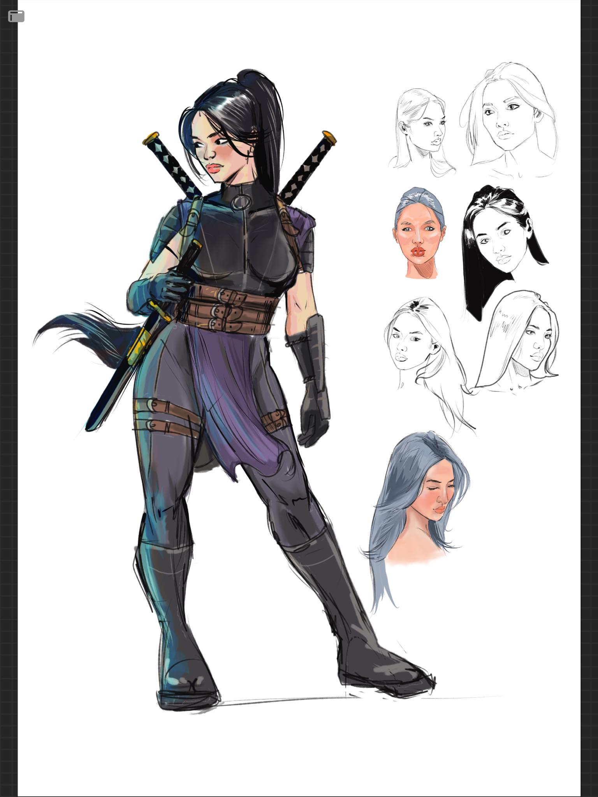

Gin
Gin is the last member of the Tamura clan. Little is known about her past.
Her clan was responsible for the security of a very important artifact.br Her clan was wiped out and the artifact was lost. Her weapon of choice is a katana.